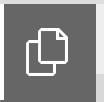
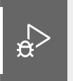
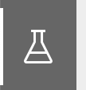

Welcome to CS112! To complete and submit course assignments, you’ll need to set up your development environment. Follow these instructions to get started:
Part 1: Visual Studio Code (VSCode)
VSCode is a powerful, lightweight code editor that we’ll use throughout the course.
Installation
- Visit the Visual Studio Code website and download the appropriate version for your operating system.
- Follow the installation prompts to complete the setup.
Setting Up Line-Length Indicator
Long lines can make your code less readable, especially on smaller screens or when viewing multiple files. We recommend a maximum of 120 characters per line. Here’s how to add a visual guide in VSCode:
- Open Settings in VSCode:
- On Mac: Go to Code > Preferences > Settings
- On Windows/Linux: Go to File > Preferences > Settings
- In the search bar, type “Editor: Rulers”
- Click “Edit in settings.json” under the “Editor: Rulers” setting

- In the
settings.jsonfile that opens, add or modify the “editor.rulers” setting as follows:
"editor.rulers": [
120
]
-
Save the
settings.jsonfile -
You should now see a vertical line at column 120, as pictured below:

Configuring VSCode for Python
Next, you’ll need to install the Python extension for VSCode:
- Open VSCode after installation.
- Go to the Extensions view by clicking on the square icon in the left sidebar or pressing
Ctrl+Shift+X(Windows/Linux) orCmd+Shift+X(Mac). - Search for “Python” in the extensions marketplace.
- Install the official Python extension by Microsoft.
Useful VSCode Features
-
 Explorer: Allows you to choose what folders and files to open. If no folder is open, clicking Open Folder will allow you to open a folder from your computer and show its files in this tab for easy access.
-
Search: Allows you to quickly search over all files in the currently opened folder. You can also open search by pressing ⇧⌘F.
-
Source Control: This tab lets you interact with Git. Knowing and using Git is completely optional for this course.
-
 Run and Debug: Displays all options relevant to running and debugging the program you are writing. You can also open this tab using the keyboard shortcut ⇧⌘D.
-
 Extensions: Allows you to download extensions for different languages and tools. The only extension necessary for this course is the Python extension, which you should have already installed.
Extensions: Allows you to download extensions for different languages and tools. The only extension necessary for this course is the Python extension, which you should have already installed. -
 Testing: You can run tests using this tab if test files are in the locations that it expects. Using this is entirely optional; assignments will direct you to run tests by running
pytestin the terminal.
Part 2: Python
You must have a Python version from 3.7.x+ for this course.
If you think you already have Python installed, check which version you have installed by running python3 --version in your terminal or command prompt. (You can open a terminal in VSCode by clicking Terminal > New Terminal.)
Otherwise, follow the instructions here to download and install the correct version for your device. Please do not install versions outside the range specified previously as they will not work with the stencil code provided.
Verifying Installation
- Open VSCode and access the integrated terminal.
- Type
python3 --versionand press Enter. - You should see output like
Python 3.x.x.
If you don’t see this or encounter any errors, please reach out to a TA for assistance.
Part 3: Setting Up PyTest
PyTest is a testing framework for Python that we’ll use in this course.
- Open the VSCode terminal.
- Run the following command:
pip3 install pytest- Verify the installation by running:
pytest --versionYou should see output indicating the installed version of PyTest.
Using PyTest
- When writing test files, always include
import pytestat the top of your file. - Name your test functions ending with
*_test.py. - To run tests, use the command
pytest [test_file_name.py]in the terminal.
Gradescope
You should be enrolled in the course on Gradescope. If you are not, please reach out to a TA. Once you are enrolled, you can log in to Gradescope using your school email. We grade anonymously, so you should not include your name in any of your submissions.
Need Help?
If you encounter any issues during setup or have questions, don’t hesitate to:
- Post on EdStem (our course discussion forum)
- Attend office hours
- Email the course staff at cs112-staff@lists.brown.edu